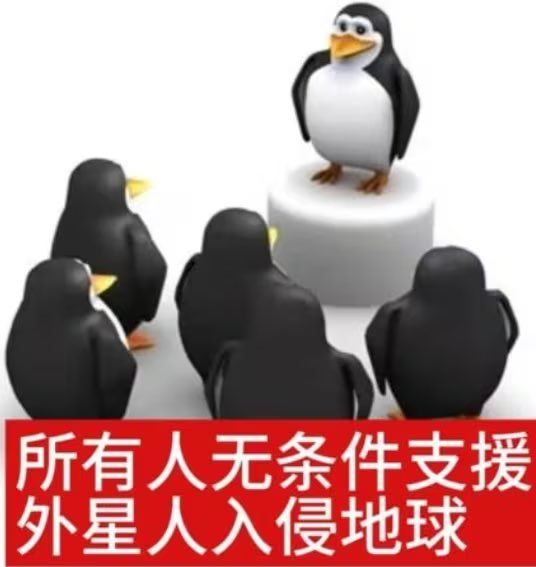
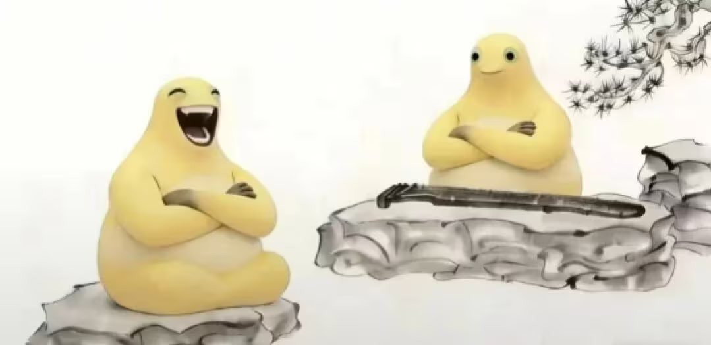

现在的网络我只看到了人性、女权、对立、基本盘、神人、黄腔、见证、国拟、水鬼、网暴、造谣、营销、两面派、扣帽子、小鬼、云玩家、诽谤、舆论、腐败、崇洋媚外、性别歧视、种族歧视、民族优越性、极端民族主义、偷换概念、骂战、不公平、冷漠、嘲笑、不爱国、盗视频、烂梗、极端粉丝、马仔、小学生擦边、跪舔、新时代大跃进、颠倒黑白、跟风、串子、“发情”、针锋相对、鄙视、个人优越性、Ky、博流量、玩家对立、审核置之不理、“知心大姐姐”、厌男、厌女、未进化猿人、猎奇、黑红，流量不均等等等等，不是没有了，是我还没有想到。虽然时间已经过去了，但是我还是希望网络能够再现一次辉煌，回归那时土土的，但却和谐的2018

